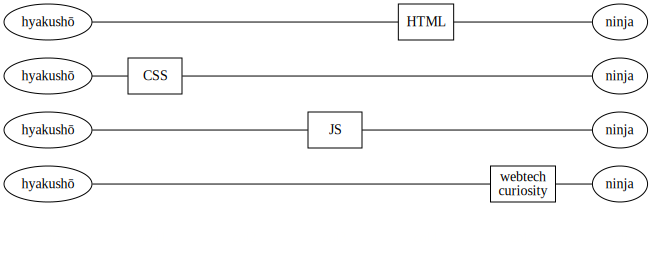

Introduction
Setting the sceneSections in this chapter
Your teacher
The preacher
Let's start with the most important - me!

Contact information:
- Email: david.waller@edument.se
- Blog: http://blog.krawaller.se
- Twitter: krawaller
- Phone: 0708-293094
This week I'm yours to command! :)
But, fair warning - I spend my days singing this gospel:

Which means you'll have to put up with quotes like this:
Java is to JavaScript as pain is to painting
The Web platform
a.k.a. the holy trinity
The Web platform is really the combination of three separate technologies:

(There was also a dark time when Java applets were used in webpages, but we don't talk about that...)

Traditionally, web apps looked like this:

Web tech was just the UI. The real coding was done in php / ruby / java.
But a modern SPA (Single Page Application) is more like this:

Additionally, web tech has escaped from the browser:

In essence: web tech is on the (high) rise, and even if you intend stay in a sheltered Java garden, knowledge about the web platform will serve you well.
The masterplan
tajmad och klar in i minsta detalj
Here follows some points on what is to follow!
- The gist: during this week I will teach you the basics of web development.
- Exactly what that entails is not set in stone - I have the basics prepared, and then there are many roads to take, especially around the JavaScript parts.
- We will make those decisions together as the course progresses.
- The web course will be centered around these slides.
- They are available online at http://blog.krawaller.se/academyjs/slides.
- I will regularly update them during the week.
- The focus will be on concepts and the big picture, not the nitty gritties.
- We will strive to adhere to accelerated learning's focus on exercises, but
- conveying the big picture does require dogfooding of theory.
- It is forbidden to keep a question to yourself. Ask away! Because,
- there are no stupid questions. Only stupid people.
The goal boiled down - we want you to...
- understand the fundamentals of the father HTML, the son CSS and the holy spirit JavaScript.
- know where to go fo the specifics
Tools and resources
Gear up!
On this journey, our primary tool is a browser. I primarily use Chrome, but any modern browser will do.
This is not just for consuming web content - the developer tools inside the browser is an integral part of our setup. Consider it part of our IDE without the I!
We also need an editor. As HTML, CSS and JavaScript isn't (necessarily) compiled, any text editor can be used, but preferrably one with good web tooling. You have two good choices:
- Upgrade IntelliJ (the Community edition does not support JS)
- Install the free trial for Webstorm which is very similar
Finally you need a good resources for looking up specifics. I recommend Mozilla Developer Network, or MDN for short.

Find it at https://developer.mozilla.org/.
Whichever resource you use, it is important to have somewhere within reach to go for details.
Therefore, choose a resource and invest time in getting to know it and know it well, so that future lookups go quick.
Exercise - Ninjaness
are you a ninja or a hyakushō?
For each part of the holy trinity, and for your interest in the web platform, rate yourself on a scale of 1-10 where 1 is hyakushō and 10 is ninja!

(I promise to try to not let the answer to question 4 affect me)
Throughout the week we'll be using Github for exercise submissions.
To submit;
- jot down your answers in a simple text file
- fork the repo at github.com/krawaller/academysubs
- download the repo to your computer
- make sure you are working in the
gh-pagesbranch - create a folder named after your github user in
submissions/ninjaness. - add the text file with your answers to that folder
- commit the changes
- push to your fork
- now make a pull request!